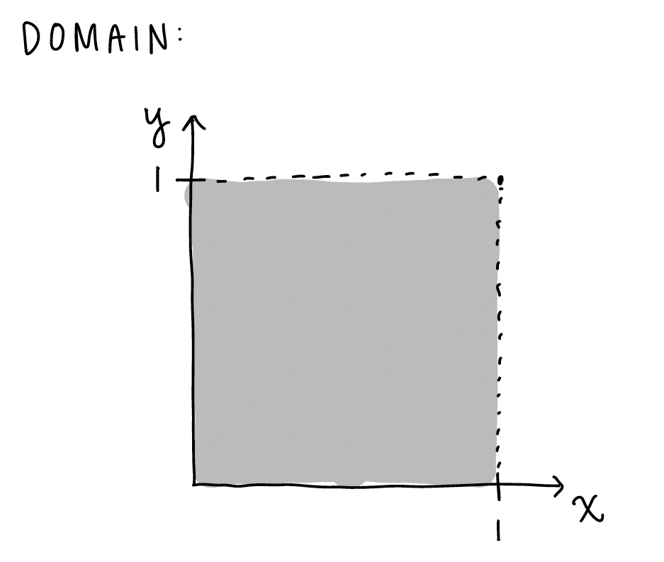
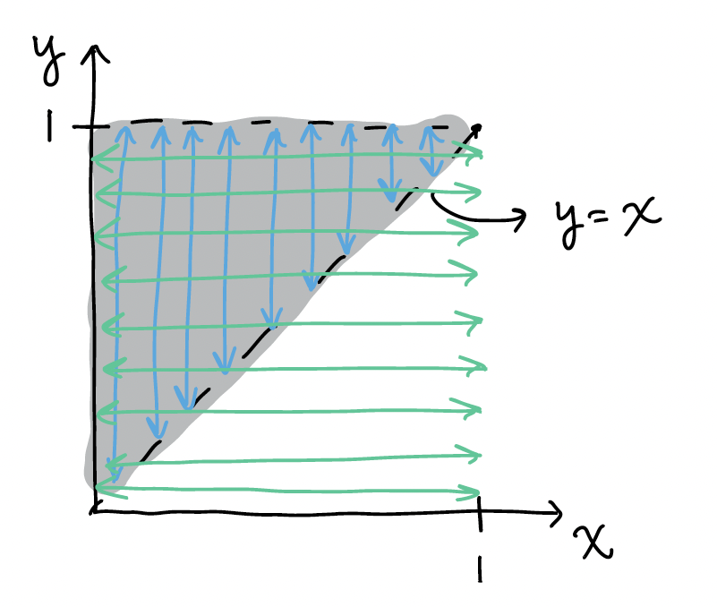

Week 9
Resources
| Chapter | Topic | Meike’s video | Slides | Annotated Slides | Recording |
|---|---|---|---|---|---|
| Extra visualization of joint, conditional,and marginal pdf’s | |||||
| 28 | Expected value of continuous RVs | ||||
| 29 | Variance of continuous RVs |
For the slides, once they are opened, if you would like to print or save them as a PDF, the best way to do this is:
- Click on the icon with three horizontal bars on the bottom left of the browser.
- Click on “Tools” with the gear icon at the top of the sidebar.
- Click on “PDF Export Mode.”
- From there, you can print or save the PDF as you would normally from your internet browser.
On the Horizon
Class Exit Tickets
Additional Information
Announcements 11/20
- No office hours this week!!
- HW 4 feedback
In NTB 1
Did not check all your numbers
Try to use variable name (like highest education level) when describing what the probabilities mean
NTB 4
Please relate this back to the hypergeometric distribution and see that each cashew drawn is not independent, but we get the same expected value as a binomial
As property of hypergeometric distribution (without replacement): expected value is the same as binomial (with replacement).
- Final exam will not be cumulative
- Will only cover Chapter 24 and on
- Student access to Vanport
- 5/6th floors: 7:30 a.m. to 9:30 p.m all days
Statistician of the Week: Mike Dairyko

Dr. Dairyko was a Posse Scholar at Pomona College where a linear algebra class set him on a career path centered around mathematics. Through that class he found his way to two different summer REU programs and eventually to a PhD in Applied Mathematics from Iowa State University (2018). While initially believing that he would stay in academia after his graduate work, being introduced to machine learning methods caused him to pursue data science jobs after graduation.
Dr. Dairyko served as a Senior Manager of Data Science at the Milwaukee Brewers and is now the Director of Ticketing Analytics at the Milwaukee Bucks. Helping the organization get the most out of budgeting, revenue, and ticket sales allows him to fully use his training in mathematics and data science.
Topics covered
Dr. Dairyko’s graduate work is in graph theory, in particular, exponential domination. In a graph, exponential domination is the extent to which a particular vertex influences the remaining vertices in a graph. His published work falls very much within the realm of mathematics, proving that particular properties of graphs exist. However, graph theory is intimately related to machine learning; for example, it is the foundational structure of a neural network. Understanding properties of graphs help data scientists develop even more powerful models to harness information from data.
Relevant work
M. Dairyko, A linear programming method for exponential domination. The Golden Anniversary Celebration of the National Association of Mathematicians, Volume 759 of Contemporary mathematics. Eds O. Ortega, E. Lawrence, E. Goins (2020).
M. Dairyko, L.Hogben, J. Lin, J. Lockhart, D. Roberson, S. Severini, M. Young, Note on von Neumann and Rényi entropies of a graph. Linear Algebra and its Applications, 2017.
Outside links
Other
Dr. Dairyko’s path from mathematics to data science has been written about in SIAM and in the Iowa State University newsletter Math Matters.
Please note the statisticians of the week are taken directly from the CURV project by Jo Hardin.
Muddiest Points
1. What does the expected value and variance of continuous RVs mean?
2. How do we set the bounds on a double integral?
When the domain of the RVs are not dependent on each other, then we use the bounds as is. In example 2 of Chapter 26 notes, we have the joint pdf \(f_{X,Y}(x,y)= 18 x^2 y^5\), for\(0 \leq x \leq 1, \ 0 \leq y \leq 1\). If we wanted to calculate something like \(E(X)\), then we could use the bounds as they are. Below is the domain for \(x\) and \(y\):

Here is the integral for the expected value where we integrate over the whole domain of \(x\) and \(y\):
\[ E(X) = \displaystyle\int_0^1 \displaystyle\int_0^1 x (18 x^2 y^5 )dy dx \]If we want to find the probability \(P(0.25 \leq X \leq 0.5, 0.5 \leq Y \leq 0.75)\), then we can look at the specific values of the probability:

Note the blue lines above indicate how we integrate over \(y\) first from 0.5 to 0.75 and the green lines indicate how integrate over \(x\) first from 0.25 to 0.5. It seems like we’ve integrated over an area that isn’t within our specified probability. However, the integrated area is ONLY the overlap of the \(x\) and \(y\) bounds for the probability.
\[P(0.25 \leq X \leq 0.5, 0.5 \leq Y \leq 0.75) = \displaystyle\int_{0.25}^{0.5} \displaystyle\int_{0.5}^{0.75} 18 x^2 y^5 dy dx\]
Let’s use the same pdf, but now the domain of the two RVs is dependent on one another. We have the joint pdf \(f_{X,Y}(x,y)= 18 x^2 y^5\), for\(0 \leq x \leq y\leq1\)
If we wanted to calculate something like \(E(X)\), then we need to account for fact that \(x\) must be less than of equal to \(y\). We can look back at the domain for this:

Note the blue lines above still indicate how we integrate over \(y\) first from \(x\) to 1, and the green lines indicate how integrate over \(x\) first from 0 to 1. Once again, it seems like we’ve integrated over an area that isn’t within the domain. However, the integrated area is ONLY the overlap of the \(x\) and \(y\) bounds. Thus, once we’ve restricted \(y\) to the area between \(x\) and 1, we no longer need to restrict \(x\) to the are of 0 to \(y\).
\[ E(X) = \displaystyle\int_0^1 \displaystyle\int_x^1 x (18 x^2 y^5 )dy dx \] If we want to find the probability \(P(0.25 \leq X \leq 0.5, 0.5 \leq Y \leq 0.75)\), then we should look back at our domain. For now, we are focusing on the orange area:

Because the orange area is totally within our domain, we can leave our integral our bounds as the exact values we specified:
\[P(0.25 \leq X \leq 0.5, 0.5 \leq Y \leq 0.75) = \displaystyle\int_{0.25}^{0.5} \displaystyle\int_{0.5}^{0.75} 18 x^2 y^5 dy dx\]
However, if we want the probability \(P(0.5 \leq X \leq 0.75, 0.5 \leq Y \leq 0.75)\), we would focus on the pink area above. We would limit one of our integrals to the \(y=x\) equation:
\[P(0.5 \leq X \leq 0.75, 0.5 \leq Y \leq 0.75) = \displaystyle\int_{0.5}^{0.75} \displaystyle\int_{x}^{0.75} 18 x^2 y^5 dy dx\]
OR
\[P(0.5 \leq X \leq 0.75, 0.5 \leq Y \leq 0.75) = \displaystyle\int_{0.5}^{0.75} \displaystyle\int_{0.5}^{y} 18 x^2 y^5 dx dy\]
The key to these probabilities is that the bounds with the other variable is on the inside integral! Otherwise we end up with a answer that includes a RV.
3. For the example with the integration by parts where the first part of the integral was evaluated at two points: I learned integration by parts in calculus, but it was always “integral (u dv) = uv- integral(v du)” and I’m still confused about why it was solved as “uv | - integral (v du).”
When we have an integral with bounds, we need to calculate everything within those bounds. When we have an integral like this:\[\displaystyle\int_a^b u dv = uv\bigg|^b_a - \displaystyle\int_a^b vdu\] Then \(uv\) must be calculated over the interval \(a\) to \(b\).
Based on a rudimentary search of Integration by Parts, it is likely that the calculus class presented the integral without bounds. In that case, the integral looked like this: \[\displaystyle\int u dv = uv - \displaystyle\int vdu + c\]
For reference, this corresponds to the antiderivative section mentioned in the Chapter 24: Calculus Review notes. In probability, we are more often working with bounds than not.
I’m honestly not sure about the theory behind Integration by Parts, but if we have a bounded integral, then \(uv\) must also be bounded!